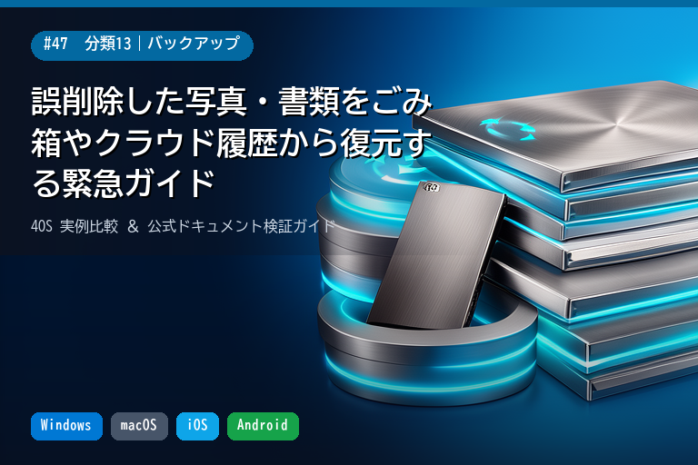

#47｜分類13: ファイル管理・バックアップ・データ復旧 2026-11-23

誤削除した写真・書類をごみ箱やクラウド履歴から復元する緊急ガイド｜Windows・macOS・iOS・Android
「大事な仕事の資料を間違えて消してしまった…」「昨日撮った大切な写真をゴミ箱に入れてしまった！」そんな絶望的な瞬間、誰しもが経験するトラブルです。
しかし、焦ってパソコンやスマホを操作し続ける前に落ち着いてください。多くのOSには、削除した直後のファイルを取り戻すための「セーフティネット」が備わっています。この記事では、Windows、macOS、iOS、Androidの4つの主要OSにおいて、標準機能を使ってデータを復元する具体的な手順を徹底解説します。
この記事で分かること：
* 各OSにおける「ごみ箱」や「最近削除した項目」の正しい操作手順
* クラウド連携（OneDrive, iCloud等）を活用した高度な復元方法
* 標準機能では手に負えない場合の注意点と対策
4OS比較早見表
| OS | 主なゴミ箱機能 | クラウド連携による復元 | 備考 |
|---|---|---|---|
| Windows 11 | ごみ箱 (Recycle Bin) | OneDrive「最近削除した項目」 | OneDrive同期時はクラウド側も確認可能 |
| macOS | ゴミ箱 (Trash) | iCloud Drive「最近削除した項目」 | Time Machineによるスナップショット復元が強力 |
| iOS | 「ファイル」アプリ内のゴミ箱 | iCloud Drive「最近削除した項目」 | 写真アプリは別枠の「最近削除された項目」 |
| Android | Google フォト / ファイルアプリ | Google ドライブ / Google フォト | アプリごとにゴミ箱の仕様が異なる |
1. Windows 11 での実例手順
Windowsでは、ローカルのごみ箱とOneDriveのクラウド履歴の両方を確認することが重要です。
📌 実例手順：ごみ箱とクラウド履歴からの復元
- ファイルエクスプローラーを開く: デスクトップまたはタスクバーから「エクスプローラー」を起動し、「この PC」>「ごみ箱」をクリックします。
- 対象ファイルを選択: 誤って削除した写真や書類を探します。見つけたら右クリックし、「元に戻す」（または「ここに移動する」）を選択します。通常は元のフォルダに自動で戻ります。
- OneDrive の場合（クラウド同期中）:
- ファイルがOneDriveフォルダ内にあった場合、ローカルのごみ箱にないことがあります。
- ブラウザで onedrive.live.com にアクセスします。
- 左メニューの「ゴミ箱」をクリックし、対象ファイルを右クリックして「復元」を選択します。
⚠️ 標準機能の制限事項・注意点
- 保持期間: OneDriveと統合されている場合、クラウド側の「最近削除した項目」は通常30日間保存されます。この期間を過ぎると永久に消去されます。
- 「ごみ箱を空にする」操作の影響: Windowsの設定から「今すぐ空にする」を実行すると、ローカルデータだけでなく、同期状態によってはクラウド上のデータも即座に削除される可能性があるため注意が必要です。
- システムファイルの除外: OSのシステムファイルやインストール済みのアプリはごみ箱に入らないため、標準機能での復元は不可能です。
🚨 よくあるトラブルと解決法
- 「ごみ箱」を開くと「この PC にアクセスできません」と表示される
- 原因: OneDriveの同期停止や権限エラー、またはクラウド上のデータが既に削除されている可能性があります。
- 解決策: ネットワーク接続を確認し、タスクトレイのOneDriveアイコンを右クリックして「同期」を再開してください。改善しない場合はMicrosoft公式サポートに従い再インストールを検討します。
- 「最近削除した項目」が Web ブラウザでも見当たらない
- 原因: 保持期間（30日）を過ぎているか、自動削除設定が有効になっている可能性があります。
- 解決策: 標準機能では復元不能と判断せざるを得ません。この場合は専門のデータ復旧ツールが必要になります。
- ファイルを開くと「以前に別の場所で保存されています」と警告が出る
- 原因: ローカルの同期ファイルを削除し、クラウド版のみが残っている状態です。
- 解決策: OneDrive Webサイトから「この PC にダウンロード」を選択してローカルコピーを取得してください。
2. macOS での実例手順
macOSでは、Time Machineによるバックアップ戦略とiCloudの履歴確認を組み合わせます。
📌 実例手順：ごみ箱と Time Machine からの復元
- Finder を開く: Finderを開き、「最近の場所」>「ゴミ箱」をクリックします。
- ファイルを選択して復元: 対象ファイルを右クリックし、「元の場所に移動させる」を選択します。
- Time Machine を使った復元（推奨）:
- バックアップディスクが接続されている場合、Finderメニューの「移動」>「Time Machine」をクリックします。
- タイムラインから削除されたファイルが存在する過去の日時を選択します。
- 対象ファイルを右クリックし、「この Mac にコピー」を選択します。
⚠️ 標準機能の制限事項・注意点
- ごみ箱の自動空化: macOS標準では「最近削除した項目」を直接管理する独立メニューはバージョンにより挙動が異なります。基本的にはTime Machineのスナップショットに依存します。
- 外付け HDD 接続必須: Time Machineを利用するには、必ず外部ストレージへの定期的なバックアップが必要です。iCloud Driveと同期していない限り、クラウド履歴からの復元は行えません。
🚨 よくあるトラブルと解決法
- Time Machine のスナップショットが見つからない
- 原因: バックアップディスクが未接続、またはOSアップデートにより再初期化されている可能性があります。
- 解決策: 「システム設定」>「Time Machine」を開き、ディスクが正しく認識されているか確認し、必要に応じてバックアップを再起動してください。
- ごみ箱からファイルを移動すると「場所が見つかりません」と表示される
- 原因: 削除直後にスナップショットが更新されず、参照先を見失っている可能性があります。
- 解決策: 直ちにFinderのゴミ箱を開き、「ここにコピーする」を選択して特定のフォルダを指定してください。
- 「最近削除した項目」が表示されない
- 原因: Finderのサイドバー設定で非表示になっているか、OSの仕様変更によるものです。
- 解決策: 「Finder」>「環境設定」>「一般」タブで、関連するチェック項目を確認してください。
3. iOS（iPhone / iPad）での実例手順
iOSは「ファイル」アプリと「写真」アプリで仕組みが異なります。
📌 実例手順：ごみ箱と iCloud ドライブからの復元
- 「ファイル」アプリを開く: ホーム画面の「ファイル」アイコンをタップします。
- 場所を選択: 「iCloud ドライブ」または「OneDrive」などのフォルダを開きます。
- ごみ箱の確認と復元:
- ファイルリストから「最近削除した項目」（通常は画面下部やサイドバー）をタップします。
- 対象ファイルを選択し、「復元」をタップします。※iCloud Driveでの保持期間は30日間です。
- 写真アプリの場合: 「写真」>「アルバム」>「最近削除された項目」から選択し、「復元」をタップします。
⚠️ 標準機能の制限事項・注意点
- クラウド依存: iOSではローカルストレージのみでのごみ箱操作は限定的です。基本的にはiCloud Drive等のクラウド連携が有効な状態での復元を前提としています。
- 「すべて削除」の罠: 写真アプリ等で「すべて削除」を実行すると、iCloudから即座に消去されるケースがあり、バックアップがない場合は復元が極めて困難になります。
4. Android での実例手順
Androidはメーカーや機種によって「ファイル」アプリの挙動が異なりますが、Google公式アプリを基準とした手順を解説します。
📌 実例手順：Google フォト / ファイルアプリからの復元
- Google フォト（写真の場合）:
- 「Google フォト」アプリを開き、下のメニューから「ライブラリ」をタップ。
- 「ゴミ箱」を選択し、復元したい写真を選んで「復元」をタップします。※保持期間は通常60日間です。
- Files by Google（書類等の場合）:
- 「Files by Google」アプリを開きます。
- メニュー（三本線）から「ゴミ箱」を選択します。
- 対象ファイルを選択し、「復元」をタップします。
⚠️ 標準機能の制限事項・注意点
- アプリによる差異: SamsungやSonyなどメーカー独自のファイルマネージャーを使用している場合、ゴミ箱機能自体が備わっていない、あるいは操作方法が異なる場合があります。
- 自動削除設定: Google フォト等の設定で「ゴミ箱を自動的に空にする」といった挙動（または期間経過による自動削除）があるため、早急な対応が必要です。
よくあるトラブルと解決チェックリスト
| トラブル事象 | 原因の可能性 | 解決策・チェック項目 |
|---|---|---|
| ごみ箱にファイルが表示されない | すでに「空にする」を実行した、またはクラウド同期が切れている。 | クラウド（OneDrive/iCloud）のWebサイト版へログインしてゴミ箱を確認する。 |
| 復元ボタンがグレーアウトしている | 保持期間（30日等）を過ぎた、またはファイルが破損している。 | 標準機能では復元不可。データ復旧ソフトの導入を検討する。 |
| 「場所が見つかりません」と出る | ファイルのパス情報が消失した、または移動中にエラーが発生した。 | 別のフォルダへ「コピー」として保存し直す操作を試みる。 |
| 特定のアプリ内データだけ消えた | アプリ独自のデータベース管理のためOSのごみ箱には入らない。 | アプリ内の設定や、公式のバックアップ機能を確認する。 |
まとめ：快適なマルチOS環境を作るポイント
今回のガイドで紹介した「ごみ箱」や「クラウド履歴」からの復元は、あくまで「削除直後の緊急事態」に対応するための応急処置です。標準機能には必ず「保持期間」という期限があり、それを過ぎた瞬間にデータを取り戻すことは極めて困難になります。
大切なデータを守り、ストレスのないマルチOS環境を作るためには、以下の3層のバックアップ戦略を組み合わせることを強くお勧めします。
- 外付けHDD/SSDによる物理バックアップ:
- 特にmacOSユーザーならTime Machine、Windowsユーザーなら「ファイル履歴」機能を使い、定期的に物理ドライブへデータを逃がすのが最も確実です。
- クラウドバックアップの常時利用:
- OneDriveやiCloud Driveを常に「同期」状態にしておくことで、デバイスの紛失や故障時にもWebからいつでもアクセス可能になります。
- データ復旧ソフト・バックアップソフトの導入:
- 「うっかり消去」に備え、自動で増分バックアップを取る専用ソフトを導入しておけば、万が一の際も数クリックで過去の状態へ戻せます。
「消えてから慌てる」のではなく、「消えても大丈夫な仕組み」を整えることこそが、プロフェッショナルなデータ管理の第一歩です。
参考文献・公式ドキュメント（一次情報ソース）
本記事の手順・仕様は以下の各OSおよびツールの公式ドキュメントに基づいています。OSアップデートによりメニュー名称や挙動が変わる場合があるため、最新仕様の確認にもご活用ください。